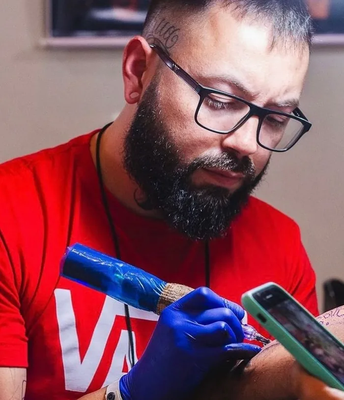

Fineline
trabalhosTraço fino e delicado: letterings, flores, símbolos pequenos e composições leves.
Ver finelineAgenda aberta
Capão Bonito · SP · desde 2020 Só maiores de 18
Portfólio
Fotos dos trabalhos feitos pelo André. Toque numa foto para ampliar.
Estilos
Os dois estilos que o André tatua: do traço fino ao degradê de cinza.
Traço fino e delicado: letterings, flores, símbolos pequenos e composições leves.
Ver finelineRetratos, animais e figuras em preto e cinza, com volume e sombra.
Ver realismo
Sobre
Tatuador em Capão Bonito, no interior de São Paulo, desde 2020. Trabalha com fineline delicado e com realismo em preto e branco.
Agendamento
Pelo formulário ou direto na DM: o que quer tatuar, onde no corpo e o tamanho aproximado. Fotos de referência ajudam.
O André responde com o valor e os horários livres na agenda.
No dia marcado, a tattoo é feita no estúdio em Capão Bonito.
Valores e sinal: a preencherCuidados pós-tattoo: a preencher
Capão Bonito · SP
Peça o orçamento pelo formulário ou direto na DM do Instagram.